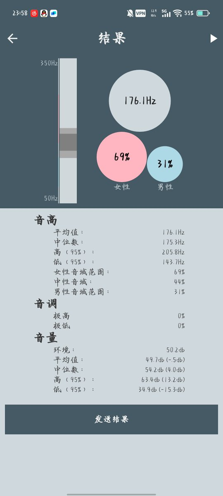
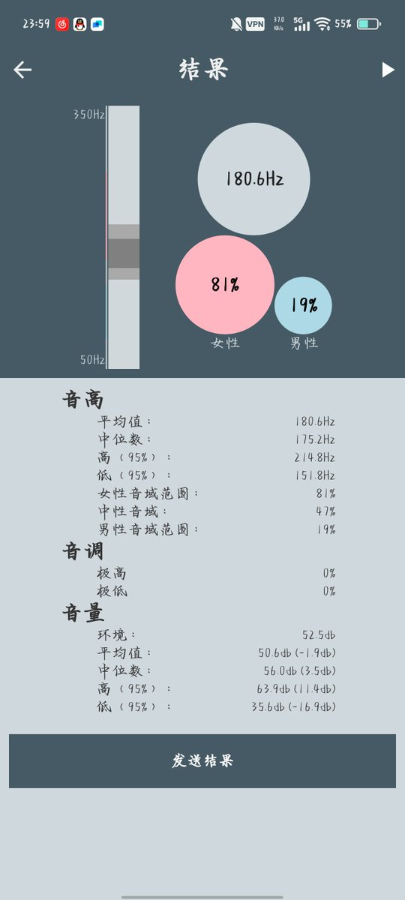
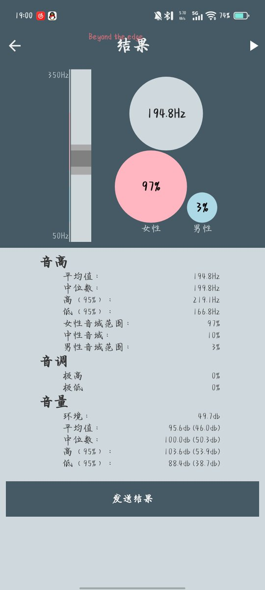

Echo37
@ax09s84751
RT @bnbn26082698: 在一个新朋友对我的声音进行长达几分钟的研究后终于想来试试这个🧐哇哦
念东西的时候如图一，平时说话是图二上下，开心的时候完全是图三，，原来我的本音居然还挺符合人设吗
代价是跟着网上教程学伪音从来没成功过（） …



醒了就去璃瑜二（🍥—）鱼板棒棒糖ww~
@bnbn26082698
在一个新朋友对我的声音进行长达几分钟的研究后终于想来试试这个🧐哇哦
念东西的时候如图一，平时说话是图二上下，开心的时候完全是图三，，原来我的本音居然还挺符合人设吗
代价是跟着网上教程学伪音从来没成功过（） https://t.co/SeAevPYUyh